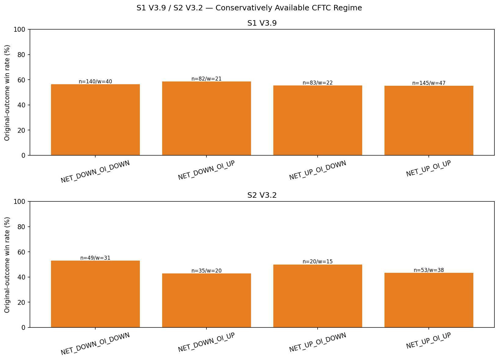

S1 full-sample WR varied only 55.17–58.54% across the four Managed Money net/OI regimes. S2 varied 42.86–53.06%, but the ordering changed in the recent holdout and most held-out cells were below n=20.
CFTC reports
241
S1 assigned weeks
130
S2 assigned weeks
104
S2 regime range
10.2pp
Key findings
S1 MID_RANGE exceeded CROWDED_LONG by 1.89pp (57.14% vs 55.25%), while S2 CROWDED_LONG exceeded MID_RANGE by 8.91pp (52.24% vs 43.33%). This is not a common S1/S2 pattern.
Although the positions are dated Tuesday and normally published Friday 15:30 New York, the primary join waits until the following Tuesday 00:00 Asia/Taipei. This prevents ordinary holiday/release-delay leakage at the cost of freshness.
The study assigns 130 distinct reports to S1 and 104 to S2, but several trades can share one weekly report. The result does not support a CFTC entry gate for either strategy.
Impact on practice
No active policy change. Research/publication only for this study.
Macro Composite Context

S1 V3.9 Managed Money net/OI regime
130 distinct conservatively available reports; several trades may share one weekly report.
| Context | n | WR | PF | Net USD |
|---|---|---|---|---|
| NET_DOWN_OI_DOWN | 140 | 56.43% | 2.05 | 3,149.94 |
| NET_DOWN_OI_UP | 82 | 58.54% | 1.985 | 1,686.26 |
| NET_UP_OI_DOWN | 83 | 55.42% | 1.645 | 1,173.04 |
| NET_UP_OI_UP | 145 | 55.17% | 1.765 | 2,446.25 |
S1 V3.9 crowding regime
| Context | n | WR | PF | Net USD |
|---|---|---|---|---|
| CROWDED_LONG | 219 | 55.25% | 1.64 | 3,093.56 |
| MID_RANGE | 231 | 57.14% | 2.095 | 5,361.93 |
S2 V3.2 Managed Money net/OI regime
104 distinct conservatively available reports; several trades may share one weekly report.
| Context | n | WR | PF | Net USD |
|---|---|---|---|---|
| NET_DOWN_OI_DOWN | 49 | 53.06% | 2.396 | 3,180.33 |
| NET_DOWN_OI_UP | 35 | 42.86% | 1.663 | 1,302.92 |
| NET_UP_OI_DOWN | 20 | 50.0% | 2.348 | 1,416.39 |
| NET_UP_OI_UP | 53 | 43.4% | 1.925 | 2,720.78 |
S2 V3.2 crowding regime
| Context | n | WR | PF | Net USD |
|---|---|---|---|---|
| CROWDED_LONG | 67 | 52.24% | 2.491 | 4,704.32 |
| MID_RANGE | 90 | 43.33% | 1.771 | 3,916.10 |
Evidence limits
- CFTC is weekly regime context, not a 30-minute timing signal.
- The conservative +7-day availability rule sacrifices some freshness to prevent release-time leakage.
- Trade-level confidence intervals do not adjust for clustering of several trades under the same CFTC report; distinct report counts are shown.
- The CFTC snapshot begins in 2022 only to provide a 52-report expanding-percentile warm-up before 2024 trades.
- No CFTC subgroup becomes a live filter without separate approval and chronological validation.
Method and evidence boundary
CFTC positioning may provide weekly context, but a useful pattern must remain consistent across strategies and chronological periods and must never be aligned to the Tuesday as-of date before publication.
All trading timestamps use Asia/Taipei. Raw CSV, source manifests, and private decision records are not published. This page contains reviewed aggregate results, one reproducible method, and pre-reviewed charts only.